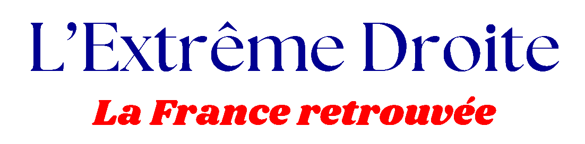

Notre politique étrangère est aujourd'hui fragilisée par les nombreux conflits mondiaux et internationaux, et la France, dans le statut qu’elle a, doit faire valoir sa puissance et son importance. Ainsi, elle doit agir et prendre des mesures drastiques afin d’imposer sa place primordiale et permettre au monde de retrouver une certaine stabilité.
I- Mesures à l’internationale.
Au niveau international, voici les mesures qui devraient être prises :
- S’opposer à l’adhésion de l’Ukraine à l’Union européenne et à la reconnaissance d’un État palestinien
- Baisser la contribution française au budget européen de 2 à 3 milliards d’euros.
- Augmenter le budget de la défense à hauteur de 55 milliards d’euros par an.
II- Combiner le rayonnement français et liaison internationale avec la protection de notre propre pays
De plus, comme nous l’avons dit concernant la culture, il faut redonner à la Francophonie, une place de choix dans notre politique étrangère et ainsi mettre sur le devant de la scène, la culture française.
La France doit, bien évidemment, apporter son aide et son soutien au monde et autres pays, mais il est dans son rôle premier de garantie la protection et la protection dans son pays avant tout, puisque nous devons assurer la défense du territoire national dans un environnement international dégradé. En effet, notre pays est aujourd’hui confronté à un retour des politiques de puissance dont la guerre en Ukraine, menace pour notre sécurité collective. Nous avons donc le devoir, pour garantir la défense de nos intérêts à l’échelle globale, d’améliorer considérablement notre outil de défense. Tout d'abord en préservant la souveraineté pleine et entière sur notre dissuasion nucléaire et garantir notre modèle d’armée complet. Puis en refusant tout transfert de compétences vers l’Union européenne dans les domaines de la défense et de la diplomatie, favoriser une préférence européenne dans les achats militaires effectués par les États européens.
III- Relation internationale et supériorité
Concernant nos relations internationales, nous devons nous battre contre l’impérialisme américain qui impose sa supériorité dans de nombreux domaines, économique surtout. Ainsi, la France et les puissances européennes en subissent les conséquences. C’est pourquoi nous devons plutôt favoriser le développement de l’Europe et de la France dans le monde dans les domaines économique, politique, et culturel. Il faut que la France développe elle-même la plupart de ses produits à défaut d’importer des produits américains ou chinois. Nous devons retrouver notre puissance économique et commerciale d’antan et promouvoir notre culture sur le devant de la scène internationale. Il faut alors favoriser la production et l’expansion des produits français et européens dans le monde, cela ayant pour objectif d’être moins dépendant des Etats-Unis et de préserver nos pays et nos cultures des puissances émergentes.